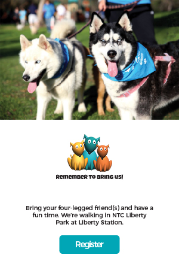

Front End Developer/Designer
San Diego Humane Society
Walk For Animals

Walk For Animals is San Diego’s largest dog walk with a 2-mile course around NTC Park at Liberty Station.
Objectives 
Create an original, responsive HTML/CSS web site for the San Diego Humane Society’s Walk for Animals event.
In conjunction with the web site, create a marketing campaign that includes advertising materials and event giveaways.
The deliverable for the marketing campaign consisted of the following items:
- Pins
- Poster
- Tote Bag
- T-Shirt
Front End Development
Being Responsive
With so many different platforms available these days, it is no longer a case of one-size-fits-all. A truly responsive web site is one that has been designed and implemented to provide a good user experience on all different platforms: mobile, tablet and desktop.
Bootstrap Framework
San Diego Humane Society’s web site was built using the Bootstrap framework to ensure it renders appropriately on all platforms. Bootstap was favoured over Foundation because it has four built-in breakpoints: Mobile, iPad, iPad Pro and Desktop. This provided more flexibility to the design.
Within the <head> section of the .html file, links are added for Bootstrap (and other CSS styling):
<link rel="stylesheet" href="css/bootstrap.css">
<link rel="stylesheet" href="css/font-awesome.css">
<link rel="stylesheet" href="css/fontStyles.css">
<link rel="stylesheet" href="css/walkForAnimalsStyles.css">
Object Placement
Due to the different display sizes/windows, it may be necessary to change the order in which components are displayed. On the Walk for Animals web site, when viewed on a tablet or desktop, the footer displays two columns of data versus one column of data on a mobile device.
To change the order of the displayed components, such that the San Diego Humane Society's logo is displayed under the social media icons (on a mobile device), the push/pull commands were used.
<!-- Social Media -->
<div class="col-xs-12 col-md-6 col-md-push-6">
<div class="clearfix">
<p class="text-center nestedSectionPadding">
<span class="socialMediaIcon"><i class="fa fa-facebook fa-2x"></i></span>
<span class="socialMediaIcon"><i class="fa fa-twitter fa-2x"></i></span>
<span class="socialMediaIcon"><i class="fa fa-linkedin fa-2x"></i></span>
<span class="socialMediaIcon"><i class="fa fa-instagram fa-2x"></i></span>
<span class="socialMediaIcon"><i class="fa fa-flickr fa-2x"></i></span>
</p>
</div>
</div>
<!-- Humane Society logo and location information -->
<div class="col-xs-12 col-sm-6 col-sm-pull-6">
<!-- Creating some additional space when the components are stacked on top of each other.-->
<div class="hidden-sm hidden-md hidden-lg">
<div class="nestedSectionPaddingSm">&
nbsp;</div>
</div>
<div class="col-xs-12">
<img class="sdhsLogo" src="images/logoSDHSBlack.png" title="San Diego Humane Society logo" alt="San Diego Humane Society Logo">
</div>
<div class="col-xs-12">
<p class="nestedSectionPaddingSm">
Copyright <span class="glyphicon glyphicon-copyright-mark"></span> 2017 San Diego Humane Society<br>All Rights Reserved
</p>
</div>
</div>
CSS Styling

Bootstrap provides the baseline styles defined within the bootstrap.css file (imported in the <head> section of the .html file). Some of Bootstrap's generic styles were overwritten so that the web site includes the client's own branding (colours and styling).
Incorporating Client Branding
The San Diego Humane Society's goal is to get members of the general public signed up to participant in their annual Walk For Animals event. With this in mind, the "Register" call-to-action button needs to be larger than life and impossible to miss.
As a design strategy is was determined the "Register" button would be displayed as the only button on the row and not be displayed as part of a suite of buttons on the same row. This elevates the button's importance above other buttons.
Using the standard Bootstrap styling did not create the desired button emphasis needed; additional styling was required. See below.
Register button code...
<p class="text-center"><a href="register.html"><button type="button" class="btn btnStyleLg actionBtn" role="button">Register</button></a>
CSS Styling...
.btnStyleLg
{
margin-top: 5%;
margin-bottom: 5%;
width: 200px;
height: 75px;
font-size: 2.5rem;
text-align: center;
vertical-align: middle;
}
.actionBtn
{
border: solid 1px rgb(11, 167, 180);
background-color: rgb(11, 167, 180);
color: white;
}
.actionBtn:hover
{
border: solid 1px rgb(11, 167, 180);
background-color: white;
color: rgb(11, 167, 180);
}
jQuery
jQuery allows the developer to control and manipulate components within the page. Within the Walk For Animals project, jQuery is used to manulate choice/selection buttons and hide/show containers defined within the .html file.
Button Manipulation
Choice/selection buttons function similar to radio buttons… the user may select a single button from a group of buttons, such as donation amount. When selected, these buttons are orange, when not selected, they are white with an orange border. These buttons are located on the Participants and Donate pages.
The following example shows how jQuery can be used to add/remove styling classes from buttons.
$("#partipantCategoryAdult").click(function()
{
$("#partipantCategoryYouth").removeClass("optionBtnSelected");
$("#partipantCategoryCatNapper").removeClass("optionBtnSelected");
$("#partipantCategoryAdult").addClass("optionBtnSelected");
});
$("#partipantCategoryYouth").click(function()
{
$("#partipantCategoryAdult").removeClass("optionBtnSelected");
$("#partipantCategoryCatNapper").removeClass("optionBtnSelected");
$("#partipantCategoryYouth").addClass("optionBtnSelected");
});
$("#partipantCategoryCatNapper").click(function()
{
$("#partipantCategoryAdult").removeClass("optionBtnSelected");
$("#partipantCategoryYouth").removeClass("optionBtnSelected");
$("#partipantCategoryCatNapper").addClass("optionBtnSelected");
});
Hide/Show Components
The home page contains a section for dog stories, where six dogs and their stories are featured. To change the selected dog, click on one of the other dogs' images.
The .html file contains all the dog stories but (through the use of jQuery), only the story pertaining to the selected dog is displayed to the user. Below is the code for when Ramsay is selected (see image above).
$("#thumbnailRamsay").click(function()
{
$("#storyRamsay").show();
$("#storyMax").hide();
$("#storyChase").hide();
$("#storyJC").hide();
$("#storyRusty").hide();
$("#storyOscar").hide();
});
Web Design
Wireframes
The project was initiated with the creation of a set of wireframes for each of the main platforms (desktop, tablet and mobile). This ensured a high-quality, optimal design for each platform and reduced the need to redesign key components during the mockup and/or coding phase(s).
Mockups
Once the wireframes were complete and signed off, the wireframe placeholders were replaced with images and text. As images and text were identified, some of the design layouts were tweaked to accommodate larger image sizes and text descriptions.
Design Criteria

The web site and marketing campaign must incorporate the client’s logo and style, and adhere to the same art direction.
The website will be responsive, designed to work on desktop, tablet and mobile. It should be a companion to the marketing campaign.
Colour Scheme
The primary colour palette is made up of the three colours used within the Walk For Animals logo.
#03A7B6
(0, 167, 182)
#FEBF50
(254, 191, 80)
#E87029
(232, 112, 41)
Font Styles
The tone of copy throughout the web site will use an informal/family style; a tone that one might find in a conversation between two friends. The style is intended to exude “happy” and “fun”. We want people to be a part of this fun event.
To speak to the tone of copy and style of conversation, the following web-safe fonts have been selected for use:
- Headings: Quicksand
- Body Copy Text: Montserrat
Marketing Campaign
All participants in the Walk for Animals event get the special “Participant” pin. Over the years, these pins have become collectors items among the regular participants. Some participants wear all their pins to each event.
A “Pack Leader” pin goes to the individual who raises the most sponsorship money. The leader board is published on the web site and kept up to date as donations are received.
A “Volunteer” pin is given to each volunteer, as a thank you.
The goal was to design the three pins to look like a set. On the pins, I used “Family Guy” font for the date and label text and “Cooper Black” for the smaller, detail text. Each dog was initially created in Illustrator, then in Photoshop, converted to a 3-D object and rendered.
Originally the dog was designed so that he was facing inwards and only the back of the dog was displayed. However, during the poster design it was decided that seeing the dog’s face and his facial expressions was much more compelling and inviting. The pins were updated with the new dog design and the font of the dog placed on the poster.
The use of multiple dogs in the poster and the tote bags was designed to represent families (and the family event).
In 2016…
1,500 participants
$300,000 funds raised
When you participate in the Walk for Animals event, you're helping San Diego Humane Society provide food, shelter and a second chance for more than 30,000 homeless animals.